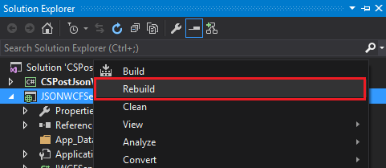
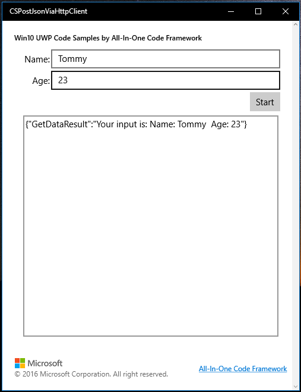

How to post json data Using HttpClient in Win10 UWP
<How to post json data using HttpClient in Win10 UWP apps>
Introduction
This sample demonstrates how to post json data to web server using HttpClient in Win10 UWP apps.
This sample is upgraded from How to use HTTPClient to post Json data to WebService in Windows Store apps.
Sample prerequisites
To open and run this sample, ensure the following requisites have been reached:
• Microsoft Windows 10(10.0.14393) or above.
• Microsoft Visual Studio 2015 Update3 or later version(s).
• Microsoft Visual Studio has installed UWP developer component.
• Microsoft Visual Studio has installed Web developer component.
Building the sample
• Open the sample solution “CSPostJsonViaHttpClient.sln” using Visual Studio.
• In Solution Explorer, right click project “CSPostJsonViaHttpClient” and select Set as StartUp Project.

• Right click project “JSONWCFService” and choose Rebuild, to restore references.

Running the sample
• Use Visual studio to open the sample solution, then press F5 Key or select Debug -> Start Debugging from the menu.
• When the app is running, you can see WCF service running.

And the UWP sample app is running.

• Click the button “Start”.

• The app will send a json data to WCF service, and set result of WCF service to UI.

Using the code
httpClient = new HttpClient();
string resourceAddress = "http://localhost:46789/WCFService.svc/GetData";
string jsonStr = JsonConvert.SerializeObject(new { Name = ViewModel.Name, Age = ViewModel.Age });
httpClient.DefaultRequestHeaders.Accept.Add(new System.Net.Http.Headers.MediaTypeWithQualityHeaderValue("application/json"));
HttpResponseMessage wcfResponse = await httpClient.PostAsync(resourceAddress, new StringContent(jsonStr, Encoding.UTF8, "application/json"));
string responseText = await wcfResponse.Content.ReadAsStringAsync();
ViewModel.ServerResult = responseText;
httpClient = new HttpClient(); string resourceAddress = "http://localhost:46789/WCFService.svc/GetData"; string jsonStr = JsonConvert.SerializeObject(new { Name = ViewModel.Name, Age = ViewModel.Age }); httpClient.DefaultRequestHeaders.Accept.Add(new System.Net.Http.Headers.MediaTypeWithQualityHeaderValue("application/json")); HttpResponseMessage wcfResponse = await httpClient.PostAsync(resourceAddress, new StringContent(jsonStr, Encoding.UTF8, "application/json")); string responseText = await wcfResponse.Content.ReadAsStringAsync(); ViewModel.ServerResult = responseText;
More information
HttpClient Class
http://msdn.microsoft.com/en-us/library/system.net.http.httpclient.aspx
Json.NET
http://www.newtonsoft.com/json
Microsoft All-In-One Code Framework is a free, centralized code sample library driven by developers' real-world pains and needs. The goal is to provide customer-driven code samples for all Microsoft development technologies, and reduce developers' efforts in solving typical programming tasks. Our team listens to developers’ pains in the MSDN forums, social media and various DEV communities. We write code samples based on developers’ frequently asked programming tasks, and allow developers to download them with a short sample publishing cycle. Additionally, we offer a free code sample request service. It is a proactive way for our developer community to obtain code samples directly from Microsoft.